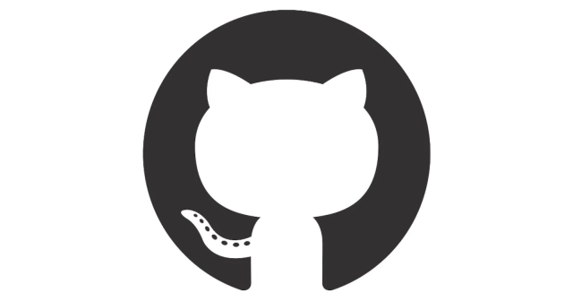

Compétences
HTML

CSS

JavaScript

React

GitHub
Je m'appelle Akram Bouchoucha, j'ai 20 ans et je suis développeur web passionné par les nouvelles technologies et la création de solutions innovantes. Après avoir obtenu une licence en anglais, j'ai décidé de me réorienter vers le développement web, une décision motivée par ma curiosité pour le monde numérique et mon envie de participer activement à la transformation digitale.
J'ai suivi une formation intensive de développeur web chez OpenClassrooms, où j'ai acquis des compétences solides en HTML, CSS, JavaScript et React. Cette formation m'a permis de travailler sur des projets concrets, d'apprendre les meilleures pratiques du développement web et de développer une approche rigoureuse et structurée du code.
Mon parcours en intégration web m'a appris à transformer des maquettes en sites web fonctionnels et esthétiques. J'ai développé une attention particulière aux détails, à l'optimisation des performances et à l'accessibilité, garantissant ainsi une expérience utilisateur optimale.
En plus de mes compétences techniques, j'ai appris à collaborer efficacement avec des équipes pluridisciplinaires, à gérer des projets de manière agile et à m'adapter rapidement aux nouvelles technologies et aux outils. Mon objectif est de continuer à apprendre et à évoluer dans ce domaine passionnant, tout en apportant ma contribution à des projets innovants et ambitieux.
HTML
CSS
JavaScript
React
GitHub
Pour ce projet, j'ai travaillé sur l'interface mobile-first du site d’une start-up, Ohmyfood. Mon objectif principal était d'intégrer une maquette en mobile-first, en utilisant les maquettes pour mobile et desktop, le prototype sur Figma, ainsi que les images et textes nécessaires. Cette approche m'a permis de comprendre l'importance de concevoir des sites web adaptatifs et réactifs.
J'ai mis en œuvre des animations CSS pour enrichir l'expérience utilisateur du site, en donnant vie à l'interface et en rendant la navigation plus interactive et engageante. L'utilisation de SASS, un pré-processeur CSS, m'a aidé à écrire des styles plus organisés et maintenables, tout en étendant les fonctionnalités de base du CSS.
Enfin, j'ai versionné le projet avec Git et GitHub, ce qui m'a permis de me familiariser avec ces outils essentiels pour la gestion et la collaboration sur des projets de développement web. Ce projet a considérablement renforcé mon profil en tant que développeur front-end compétent et polyvalent.
Voir le code Voir le sitePour ce projet, j'ai optimisé le référencement (SEO) et l'accessibilité du site d'un photographe. J'ai identifié les problèmes de chargement et de SEO, puis proposé et implémenté des solutions pour améliorer la vitesse de chargement et la structure du code. En utilisant des outils comme Lighthouse et Wave, j'ai amélioré les performances du site, augmentant sa visibilité sur les moteurs de recherche.
Voir le code Voir le site